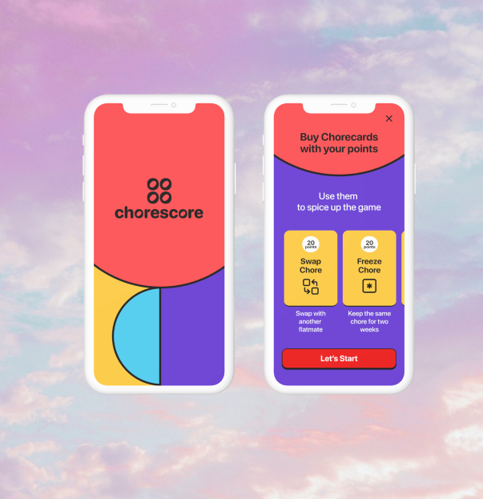
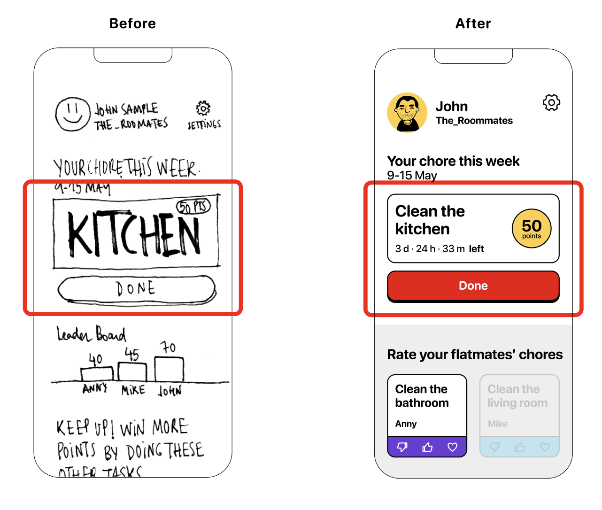
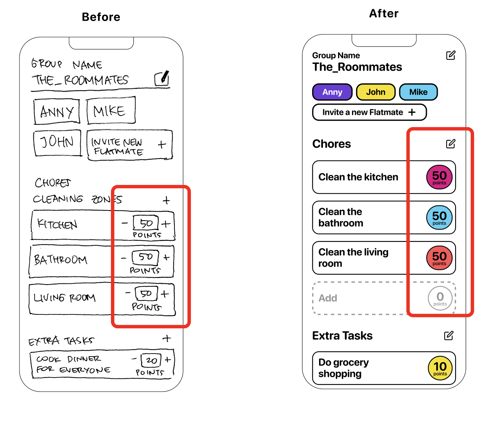
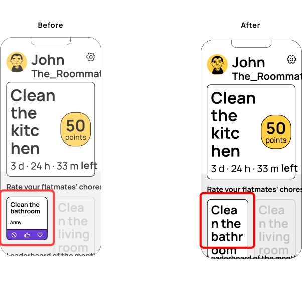
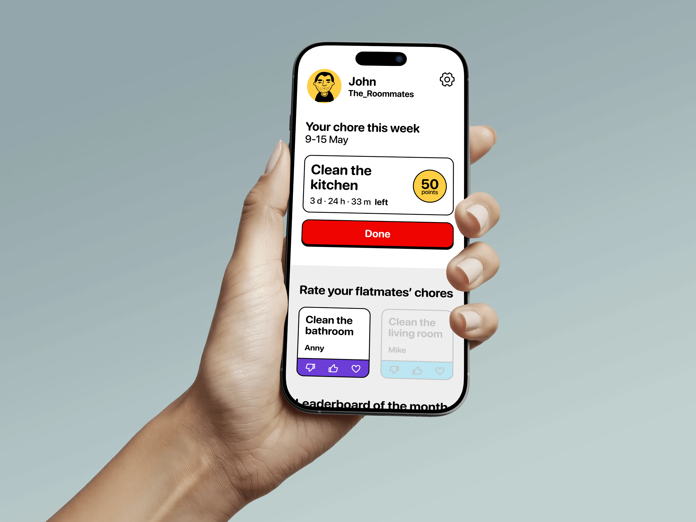

Product Designer, UX Researcher, UI Designer
Flatmate's problems
Case Study
Ideation Methodology 360, MoSCoW method, Gamification
80 hours · Jun 6 – Jul 4 2022
2022
"Discover a problem, then, provide a solution."
Although this is a scholar project, it can help figure out how — with a limited timeline and large freedom — to organize projects and shape solutions.
Gathered from 10 interviews among people aged 20–35 who are currently sharing a flat.
of interviewees mentioned having difficulties when taking common decisions.
of interviewees mentioned having discomfort cleaning the kitchen.
John recently brought Marta, a new flatmate, to live with him and two other people. For the cleaning arrangement, John and his flatmates use the Chorescore app.
Marta opens her invitation link, creates her profile and reads the onboarding.
The week has finished! John discovers who the winner is, submits his preference, and lets Chorescore do the rest.
As Marta is new to the flat she had no prior arrangement, so a chore gets assigned to her — meaning she may not be the winner this time. But she can check the Chorecards to spice up the game and take ideas for future chore revenges, unlocked as she earns points from extra tasks, good feedback and climbing the leaderboard.

Feedback icons & cardThe icon wasn't understood as bad feedback for a flatmate — it read as "prohibited" or "never done" instead, which created confusion. We got inspired by Facebook's reaction approach instead.

Editable points by the adminTesters were confused about the concept: could anyone modify the points? "Can I add more points to myself and change the others?" Points were changed into a closed format, editable only by the group admin.

Chore card with timerTesters didn't understand what the card meant: "Kitchen? Do I have to cook? To clean? What should I do?" They also didn't notice the date range or understand what it meant — so we added a timer to remind them of the chore and create urgency and a sense of the game.
